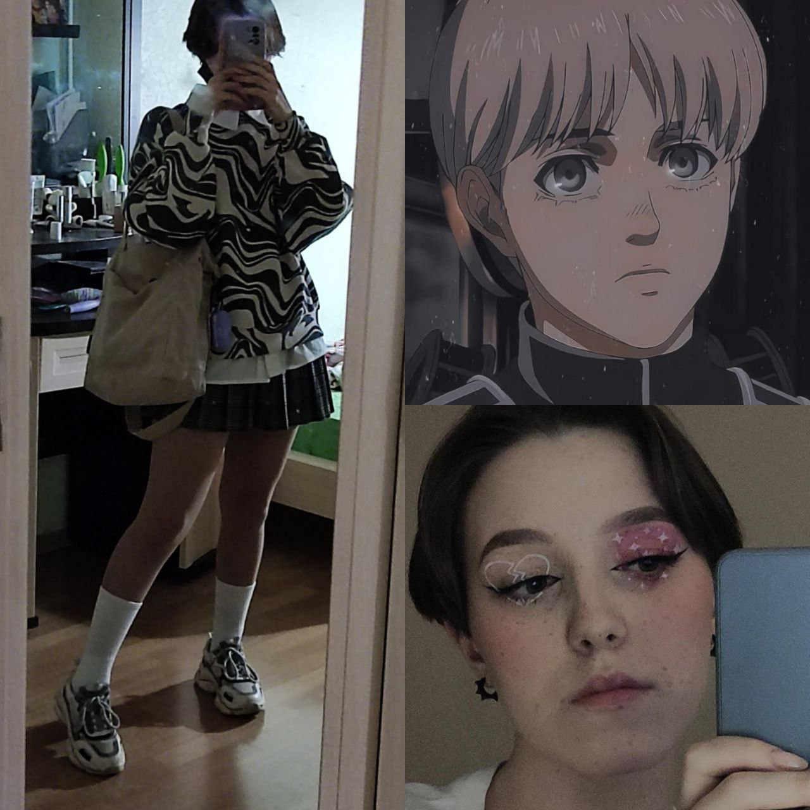

Биография
Меня зовут Екатерина. Я родилась в Новосибирске и живу
тут
все свои 17 лет. Сейчас я студентка НАТК (Новосибирский
Авиационный Технический Колледж) на специалности IT.
Прежде я училась в МБОУ 9 Гимназия.
Кроме того, всю жизнь я очень любила рисовать, и на
самом
деле, была бы не против развивать свои навыки в
коммерческих целях.
О работе
Преимущественно я занимаюсь портретами по плечи. Чаще
всего работаю в диджитал, но иногда перехожу
на такие материалы, как гуашь, акрил, акварель и
маркеры.
Все свои диджитал-картинки я пишу в Procreate на IPad 6.
Иногда принимаюсь за рисунки ниже бюста, вы можете
увидеть несколько из них в портфолио. Чтобы увидеть
больше, вы можете со мной связаться.
Сейчас я развиваю свои знания преимущественно в
перспективе и анатомии.
Если вам нужны услуги художника - я в вашем
распоряжении!